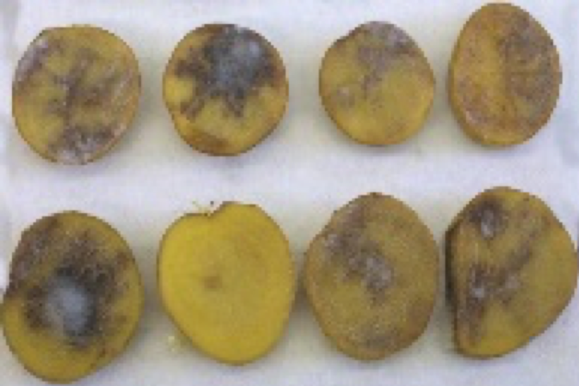
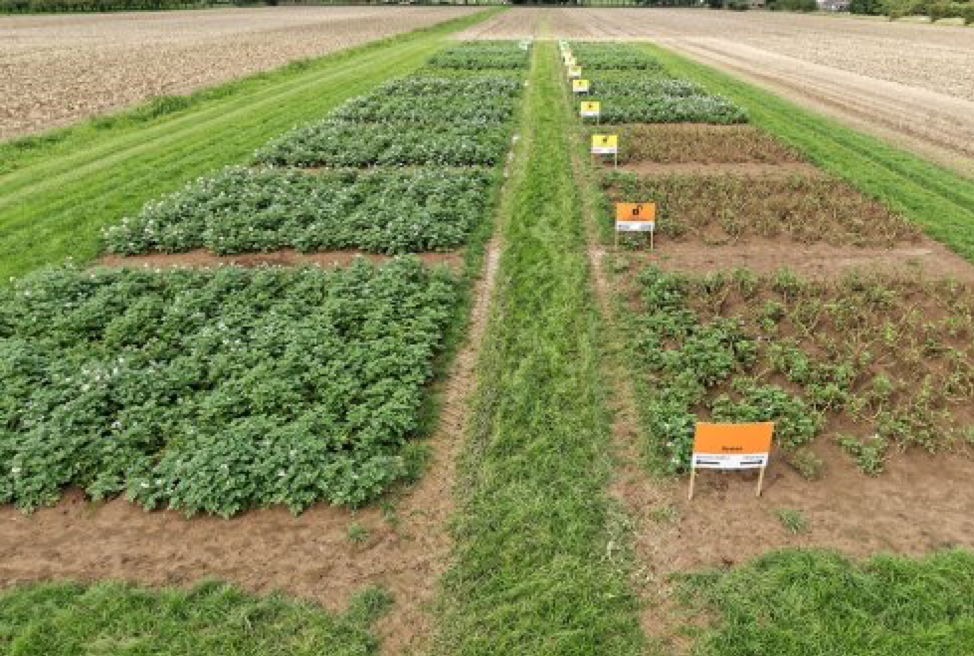

One of the biggest problems in potato farming is potato blight. Potato blight is very destructive; it is caused by a mold called Phytophthora infestans. It can wipe out an entire crop overnight. It can travel from potato to potato in a sack or a crate to ruin them all. This is a big worldwide problem, as potatoes are the third-most consumed crop after wheat and rice. In some parts of the world, people rely heavily on the potato as a staple in their diet.
https://www.diark.org/diark/species_list/Phytophthora_infestans_T30-4
Phytophthora infestans can significantly reduce yields in poorer countries because farmers can’t afford to spray fungicides frequently enough to stave it off. Even if farmers could afford to spray regularly, the heavy use of toxic chemicals is an environmental hazard. Scientists from Wageningen University & Research, Netherlands, and Ireland’s Teagasc (the Irish Agriculture and Food Development Authority), have developed three new types of genetically modified potato along with a new pest management strategy.
Photo by Wageningen University & Research
The WUR & Teagasc team have successfully tested their strategy over the last three years in both Ireland and the Netherlands. The superpotato can drastically lessen the environmental impact of potato farming by reducing the use of chemical fungicides by up to 90 percent.
More info here.
These three new genetically modified Phytophthora infestans resistant potatoes look like a paradigm changer to me and will revolutionize potato farming in many countries around the world.
What do you think?